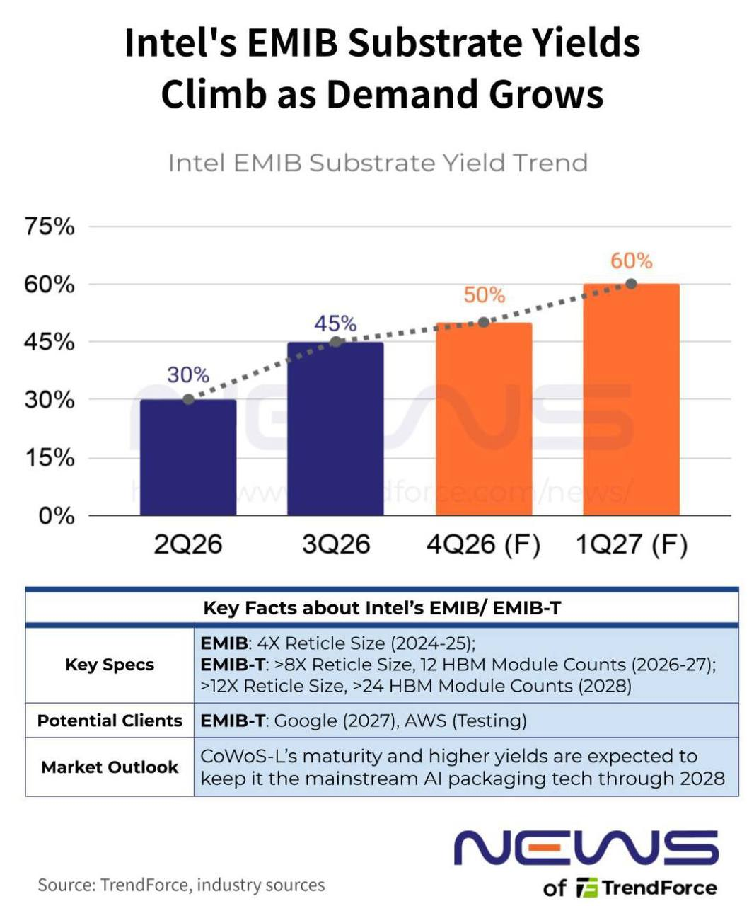

過去 26 小時只有兩則貼文，都在 10/19 下午 15:05，主題相同：英特爾 EMIB-T 先進封裝的「載板良率」瓶頸。主委引用 KeyBanc 調查與 TrendForce 圖表，點出英特爾自家封測段良率很高，但卡在外部載板廠的良率。
#6496 原文
emib-t 在 intel 封測段良率已經在九十幾，但載板段根據 keybanc，於 ibiden 是 50-60%，uni 是 20-30%
---
"機會的另一面是兩道硬約束。第一道在供應鏈：EMIB-T透過嵌入封裝基板的矽橋加矽穿孔實現垂直電力與訊號傳輸，但KeyBanc調查顯示，基板供應商Ibiden的EMIB-T基板良率平均約50%至60%，欣興僅約20%至30%。瑞銀則估計，到2028年英特爾EMIB-T可能支援超過200萬片基板以滿足聯發科需求。"
"隨著外部客戶對英特爾EMIB（嵌入式多晶片互連橋）的興趣持續增長，基板良率正成為衡量其成熟度的關鍵指標。業內人士表示，EMIB基板良率在過去一個季度已提升至45%左右，供應鏈的目標是在2027年第一季達到60%。
消息人士稱，良率的提升可以追溯到更早時期：2026年第二季良率約為30%，而目前已達到約45%。據報道，供應鏈的近期目標是在2026年第四季達到50%，高於2027年第一季60%的目標，其中日本供應商的營運狀況比其他供應商更為穩定。"
https://m.eccn.com/consultation/design/2026101812432068.html
https://www.trendforce.com/news/2026/09/23/breaking-intel-emib-substrate-yields-reportedly-hit-45-suppliers-eye-60-by-1q27/
#6497 原文（無文字，僅圖片）

TrendForce 圖表：英特爾 EMIB 載板良率 2Q26 約 30%、3Q26 約 45%，預估 4Q26 50%、1Q27 60%。下方表格：EMIB 為 4 倍光罩尺寸（2024–25）；EMIB-T 2026–27 達 8 倍以上光罩、12 顆 HBM，2028 年 12 倍以上、24 顆以上 HBM；潛在客戶 Google（2027）、AWS（測試中）；結論是 CoWoS-L 因成熟度與良率較高，預期到 2028 年仍是 AI 封裝主流。
講解
EMIB／EMIB-T 是什麼：AI 晶片要把運算晶粒和多顆 HBM 記憶體擺在一起高速互連。台積電 CoWoS 的作法是墊一大片矽中介層（interposer）；英特爾 EMIB 則只在需要互連的地方，把一小塊「矽橋」直接埋進有機載板（ABF 載板）裡，省下大片矽中介層，理論上成本較低、尺寸更好放大。EMIB-T 再在矽橋上加矽穿孔（TSV），讓電力與訊號能垂直穿過，支援更大封裝（8 倍以上光罩、12 顆 HBM）。
為什麼瓶頸在載板：因為矽橋是埋在載板裡，最難的整合工序等於轉嫁給載板廠（Ibiden 揖斐電、新光電氣、欣興等）。TrendForce 引述的技術難點包括：ABF 載板與矽橋高溫下熱膨脹率不同，矽橋難以對齊並與表面齊平；矽橋 TSV 下方新用的 NCF 膜接合時容易包氣泡、影響附著。載板良率低，代表每片良品載板成本高、供給量受限，產能爬坡就卡住。
數字怎麼讀：KeyBanc 的數字是「EMIB-T 載板、分供應商」：Ibiden 50–60%、欣興 20–30%，日系明顯領先（TrendForce 也說日本供應商較穩定）。TrendForce 圖上的 30%→45%→60% 則是「EMIB 載板」整體良率趨勢，口徑不同，不宜直接相加比較。科技新報整理的 KeyBanc 報告也提到，Google 下一代 TPU（Humufish 等）預計約 500–600 萬顆走 EMIB-T，載板低良率可能限制爬坡速度；瑞銀估 2028 年 EMIB-T 可支援超過 200 萬片載板，其中聯發科參與的 Google TPU 專案是需求來源之一。
需要注意的地方：（1）主委說「英特爾封測段良率已在九十幾」，我在這次查到的 TrendForce 與科技新報報導中都沒找到這個數字，來源不明，宜視為未證實說法。（2）TrendForce 的良率數據來自匿名業內人士（reportedly），50%／60% 只是供應鏈目標，不是已達成結果；Google 2027 採用也是 TrendForce 預期，非確認合約。（3）TrendForce 自己的結論偏保守：CoWoS-L 到 2028 年仍是主流，EMIB-T 是補充選項而非取代。投資上，這組數字對 Ibiden 偏正面、對欣興則顯示仍在追趕；英特爾封裝故事的關鍵觀察指標就是載板良率能否如期到 4Q26 50%、1Q27 60%。
（eccn.com 原文這次抓取失敗，KeyBanc／瑞銀部分以科技新報同主題報導核對，內容與貼文引述一致。）